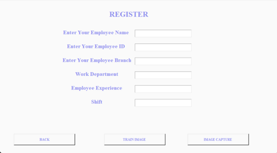
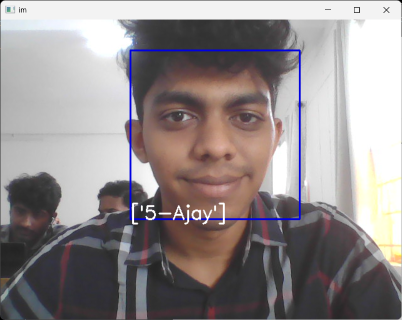

The Face Recognition Attendance System is designed to modernize the way attendance is tracked in schools, colleges, and workplaces. Instead of manually calling roll or relying on ID cards, this system uses facial recognition to automatically detect and log attendance.
The standout feature of this system is its use of OpenCV-based traditional methods instead of modern deep learning solutions. This decision ensures that the system is lightweight, efficient, and capable of running on low-end machines without requiring expensive GPUs or cloud infrastructure. This makes it ideal for deployment in institutions with limited budgets.
Workflow
This system is built to be intuitive and efficient, following a streamlined process that is easy to understand:
User Registration: Users are registered into the system with their name, ID, and a captured image of their face.
Live Video Capture: A webcam continuously captures live video.
Face Detection: The system detects all faces in each frame using OpenCV's Haar cascade classifiers or HOG features.
Face Recognition: The system compares detected faces with stored encodings and identifies matching users.
Attendance Marking: Once a face is matched, attendance is automatically logged with the user's name and current timestamp.
Admin Reports: An admin dashboard allows viewing, filtering, and exporting attendance data in CSV format.
Unlike cloud-based systems that require internet and high-end processing, this method is optimized to work entirely offline and on basic CPUs.
System Architecture
The system architecture has been carefully crafted to balance simplicity and effectiveness:
Camera: A standard 720p or higher webcam is used to capture real-time video.
Processing: Python with OpenCV handles image processing and face detection in real-time.
Recognition Engine: Face encodings are compared using the face_recognition library, which leverages HOG or CNN models for accuracy.
Database: Attendance records are saved in a local CSV or SQLite database for easy access and portability.
User Interface: A frontend built using Streamlit or Flask allows for interaction, user registration, and report generation.
This modular design ensures that each component can be updated independently, allowing for future scalability or feature integration.
Sample Code
Below is a concise Python script that demonstrates the face detection and attendance logging logic:
import cv2
import face_recognition
from datetime import datetime
def mark_attendance(name):
with open("Attendance.csv", "a") as f:
now = datetime.now().strftime('%Y-%m-%d %H:%M:%S')
f.write(f"{name},{now}\n")
known_encodings = [...]
known_names = [...]
cap = cv2.VideoCapture(0)
while True:
ret, frame = cap.read()
rgb = cv2.cvtColor(frame, cv2.COLOR_BGR2RGB)
faces = face_recognition.face_locations(rgb)
encodings = face_recognition.face_encodings(rgb, faces)
for encoding, loc in zip(encodings, faces):
matches = face_recognition.compare_faces(known_encodings, encoding)
name = "Unknown"
if True in matches:
index = matches.index(True)
name = known_names[index]
mark_attendance(name)
cv2.rectangle(frame, (loc[3], loc[0]), (loc[1], loc[2]), (0, 255, 0), 2)
cv2.putText(frame, name, (loc[3], loc[0]-10), cv2.FONT_HERSHEY_SIMPLEX, 0.75, (255,255,255), 2)
cv2.imshow('Face Attendance', frame)
if cv2.waitKey(1) == 27:
break
cap.release()
cv2.destroyAllWindows()
Frontend (UI)
The user interface (UI) for the Face Recognition Attendance System is thoughtfully designed to be simple, accessible, and efficient, ensuring ease of use even for non-technical users like teachers or HR staff.
The entire frontend is developed using Python frameworks like Streamlit or Flask, avoiding bloated modern stacks that require heavy graphics processing. We’ve chosen this approach deliberately, to keep the system lightweight and GPU-independent, making it usable on ordinary laptops or Raspberry Pi setups where powerful GPUs are not available.
While many modern face detection systems require deep learning models that demand high-end GPUs—even within the camera hardware—this project uses traditional yet reliable OpenCV methods. Why? Because OpenCV is battle-tested, open-source, lightweight, and works smoothly on CPUs. This makes our solution highly adaptable for schools, colleges, or small businesses on a tight budget.
User Registration Interface: A clean form allows students or employees to upload their photo and details (name, ID, department). The face is encoded and stored securely.
Live Detection Feed: A real-time camera feed shows face tracking boxes using OpenCV, marking recognized individuals instantly.
Attendance Dashboard: A digital register displays logs in CSV format with timestamps and names. Data can be exported or filtered easily.
Admin Panel: Admins can manage users, delete records, and generate reports from a secure login page.
The interface design emphasizes clarity, speed, and low system resource consumption. It is responsive and fits both desktops and tablets. With minimal dependencies and no cloud processing, it offers full data control and privacy.
Main Attendance Dashboard

User Registration Page

Live Face Detection and Prediction using OpenCV
Overall, the frontend serves as a bridge between cutting-edge computer vision and real-world usability. It proves that powerful technology can still be friendly, lightweight, and deployable on everyday hardware—making it ideal for practical applications in education and office environments.
Ethics & Privacy
Ethical considerations are a key part of this system’s design. Since facial data is biometric and personal, steps are taken to ensure full transparency and privacy:
Offline-Only Processing: No internet or cloud is used. All face data stays local.
Consent-Based Registration: Only registered users who provide explicit consent are included.
Deletable Profiles: Admins can remove face encodings on request.
No Third-Party APIs: The system does not rely on any external data processors or analytics providers.
These principles ensure that even in small-scale deployments, users feel safe and respected.
Future Enhancements
Here are some exciting ideas planned for upcoming versions of the system:
Voice Feedback: Add audio confirmation when attendance is marked.
Multiple Camera Support: For covering large halls and classrooms.
Mobile Integration: Allow attendance to be logged via smartphones with camera access.
Attendance Analytics: Dashboards for patterns, trends, and heatmaps.
Deep Learning Upgrade (Optional): For those with GPU availability, a deep learning backend will enhance accuracy.
Even with future upgrades, the system will retain its core value of being usable on low-cost, non-GPU hardware.